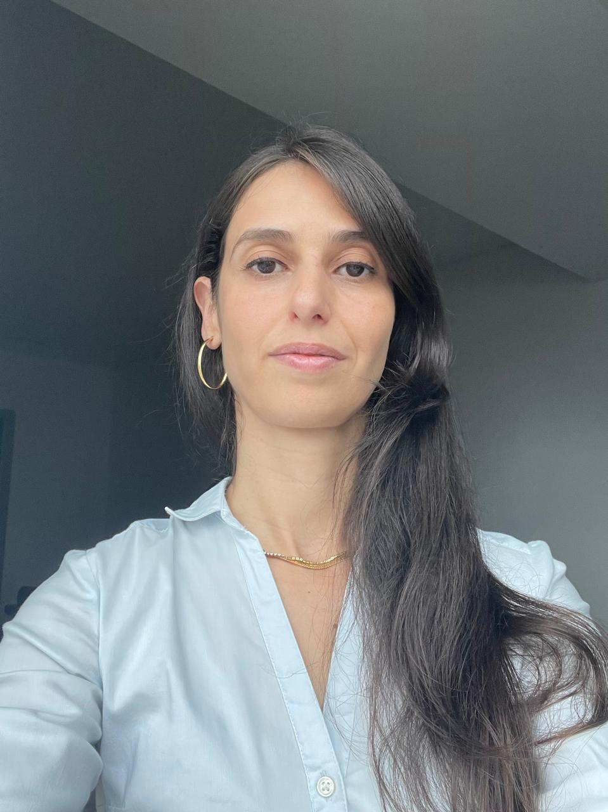

Simone Leticia C G Plaine | WDD 130
I am an electrical engineer, mother, and wife. I earned my bachelor’s degree in Electrical Engineering in 2010 from the University of São Paulo (USP). I have professional experience in the development of electric motors for refrigeration systems, where I worked on research and product engineering. I am currently studying Software Development and Web Design at BYU–Idaho to expand my technical skills and transition into the technology field.